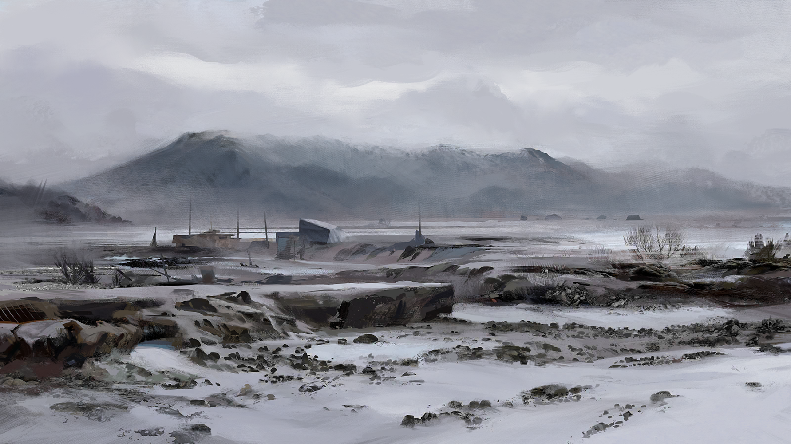
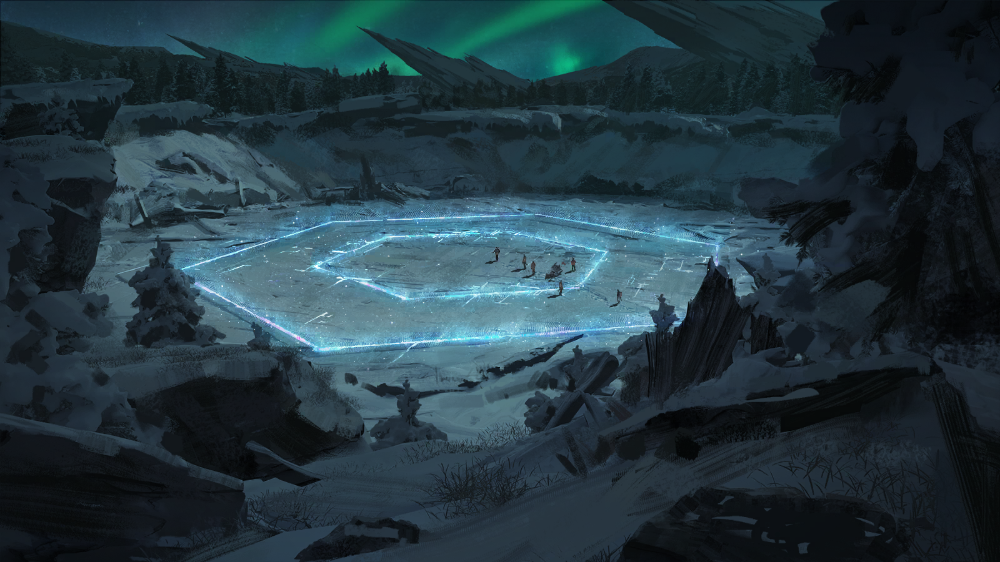

线路介绍 · 萨米冰原探险
3天2夜 · 低地市集出发 · 直升机接驳离开
行程安排
DAY 1
低地市集集合 · 装备检查
DAY 2
徒步穿越冰原，途经废弃信号放大站756号（外观参观）。
该站仍可作短波中继，本社直播服务由此接入。
DAY 3
冬牙山脉北麓观景 · 直升机接驳返回
费用：面议。含保险。不含寻回服务。
※ “不含寻回服务”系旧版模板残留，正在修订。
沿途看点

废弃信号放大站756号 · 外观（资料图）。该站已废弃多年，仅保留短波中继功能。
萨米地区天气多变，行程可能临时调整，请以向导安排为准。